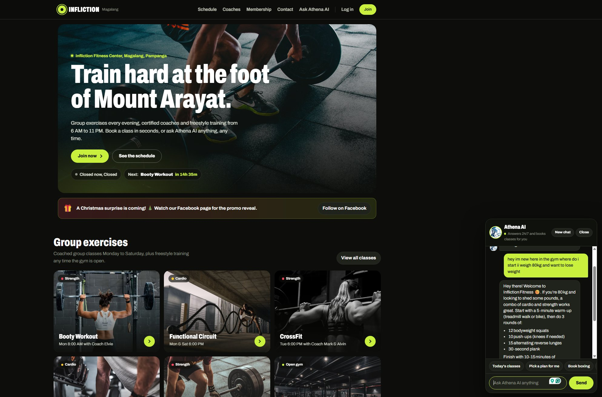
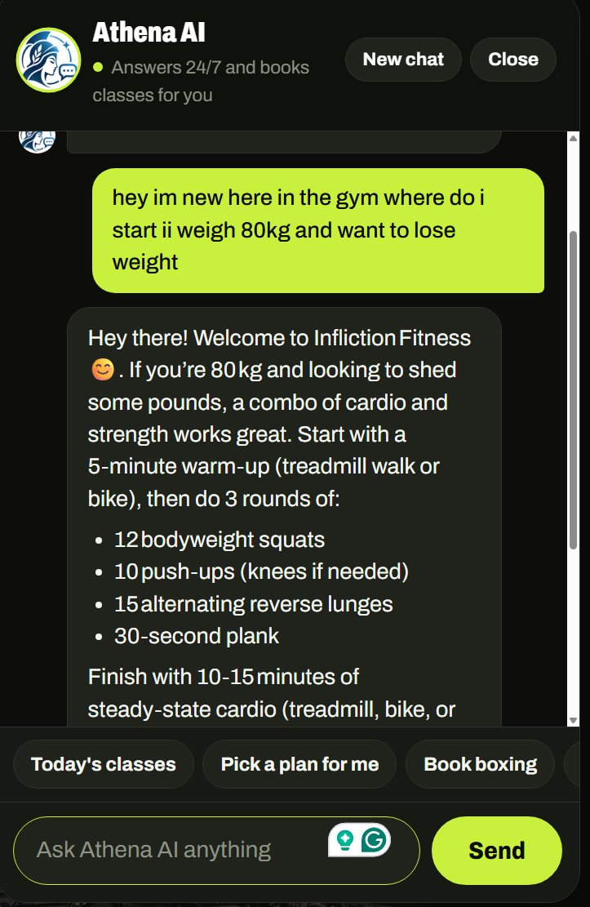

Assignment
Assignment #1: Midterms
Reflected on using ChatGPT, Gemini and Copilot, explained how LLMs differ from rule-based chatbots, mapped the conversational AI ecosystem, and proposed safeguards for a university AI assistant.
View full work →PDC60 · Conversational AI
Learnings, activities, and the evolution of my prompts.
This portfolio documents my journey through PDC60, a course on the principles, design, evaluation, and responsible deployment of conversational AI systems. Across six modules, a look at agentic AI, and a final project, I studied how large language models work, how to engineer effective prompts, how to design natural conversations, and how to build AI that is accurate, fair, safe, and privacy-aware.
More than a record of requirements, this portfolio shows how my thinking grew. In every module, I compare the prompts I wrote at the start with the improved versions I wrote after applying what I learned.
They predict the most likely response from huge training data, so they're flexible but can be confidently wrong.
ChatGPT, Gemini and Claude answered identical prompts differently in accuracy, style and instruction following.
Adding an audience, a word limit and a format turned a broad answer into a focused, useful one.
Ambiguous requests, false premises and hallucinated references mean every fact needs checking.
AI can support decisions and suggest next steps, but judgment and responsibility stay with people.
Assignment
Reflected on using ChatGPT, Gemini and Copilot, explained how LLMs differ from rule-based chatbots, mapped the conversational AI ecosystem, and proposed safeguards for a university AI assistant.
View full work →Lab Exercise 1
Tested ChatGPT, Gemini and Claude with identical prompts, scored them on five criteria, and ran a basic vs detailed prompt experiment. ChatGPT ranked best overall for accuracy and instruction following.
View full work →Lab Exercise 2
Tested where AI succeeds and fails: ambiguous instructions, a false premise (“Java was made by Microsoft”), checking references for hallucinations, context memory, and the limits of AI advice.
View full work →Before · Basic prompt
“Tell me about cybersecurity.”
Result
A long, general overview of domains, concepts and threats, with no examples and no clear audience.
After · Detailed prompt
“You are explaining cybersecurity to first-year IT students with no professional cybersecurity experience. In 200 words or fewer, explain what cybersecurity is, give three common cybersecurity threats, and provide one real-world example for each. Use simple language and organize the answer using headings and bullet points.”
Result
A focused answer under 200 words: three threats, each with a real-world example, in simple language for beginners.
What I improved
Audience · Word limit · Specific tasks · Format & structureFrom Lab Exercise #1, Part CModule 1 showed me that conversational AI is a powerful assistant, not an authority. When I gave ChatGPT, Gemini and Claude the same prompts, each one answered differently, and I learned that how I write a prompt matters as much as which tool I use. Adding an audience, a word limit and a clear format turned a vague answer into exactly what I needed.
The labs also made the risks real. AI can sound confident and still be wrong; I've even seen it give convincing but incorrect references in my own capstone work. From now on, I'll write clearer prompts, double-check facts before I use them, and keep the final decisions in human hands.
With no examples to copy, the prompt has to spell out each category and the exact output format.
Accurate, consistently formatted examples made the model reproduce the exact output we needed.
“Conversational UX and Privacy Auditor” works because it defines a job and its boundaries, not just a title.
RTCFC, COSTAR and RACE each force me to cover role, context, audience, format and constraints.
Our team cleared all six Prompt Vault locks on the first try, using only 589 of 1,500 tokens.
Lab Exercise 3
Rewrote one simple prompt, “Explain subnetting,” using seven different frameworks, keeping the meaning the same while changing how the prompt is structured.
Lab Quiz · Team AI GODS
A 90-minute team escape game in ChatGPT. Each lock tested one technique (zero-shot, few-shot, role-based, RTCFC, COSTAR, RACE) under a 1,500-token budget, ending with a Final Boss prompt.
Activity · ChatGPT, Gemini & Claude
Instead of writing my custom instructions by hand, I prompted ChatGPT to act as an expert personalization consultant and interview me, one question at a time, until it had enough to write my profile.
My resulting profile
16 interview questions, then trimmed to fit the Custom Instructions limit.
View ChatGPT session →Before · Original prompt
“Explain subnetting.”
The problem
Too open-ended: no role, no audience and no length, so the AI has to guess how deep and how long to go.
After · RTCF version
“Act as a network engineer and explain subnetting to a student. Also provide a clear explanation in under 200 words.”
Why it's better
The AI answers as an expert, pitches it at a student, and keeps it short and clear.
What I improved
Role · Audience · Length limit · ClarityFrom Lab Exercise #3Before · Lock 1, zero-shot
“Classify the provided student support message into one of four categories: ACCESS (account, login, or credential issues), NETWORK (Wi-Fi and internet connectivity problems), HARDWARE (physical device or display damage), or OTHER (general inquiries and requests). Provide the output as a numbered list where each item contains only the CATEGORY and a concise reason of no more than five words.”
Result
Passed Lock 1, but it uses one technique for one job: a category and a short reason.
After · Final Vault, RTCFC + few-shot
Role: Campus IT Triage Specialist Task: Classify messages into ACCESS, NETWORK, HARDWARE or OTHER Context: Central intake triage for campus IT issues Format: CATEGORY | SCOPE | NEXT ACTION Constraints: Never request credentials; don't invent links, deadlines or completed actions + Four few-shot examples (Input → Output)
Result
Final Boss defeated on the first attempt: all four hidden tests matched exactly.
What I improved
Named framework · Examples · Safety rules · Richer outputFrom Lab Quiz: The Prompt Vault (final prompt condensed)Module 2 turned prompting from guessing into designing. In Lab Exercise #3, I rewrote one simple request, “Explain subnetting,” in seven frameworks and saw how each one makes me think about a different part of the prompt: who the AI should be, who it's talking to, and what the answer should look like. Looking back, some of my versions still skipped components, which taught me that naming a framework isn't the same as using all of it.
The Prompt Vault put this to the test. Working as a team under a token budget, we cleared all six locks on the first try and beat the Final Boss with an RTCFC prompt combined with few-shot examples. Our one miss was the exit code: we rushed a placeholder guess instead of checking our fragments, a reminder to verify before submitting.
A safe assistant never requests passwords, OTPs or unrelated personal data.
A single question can split the possible causes, like an error, a forgotten login or an outage.
Clear states (open, intent, details, fulfill, close or escalate) make every next step obvious.
Clarify exactly what's being changed, and keep AI help separate from staff approval.
Rephrase, narrow the choices and offer control instead of repeating the same question.
Lab Quiz (Conversational UX) · Team AI GODS
A team escape game in ChatGPT. Each level showed a broken campus assistant, and we wrote a repair prompt applying conversational UX principles to fix it, ending with one Final Boss master prompt.
Level results · Key earned
Levels 2 and 4 took two attempts. Every other level cleared on the first try.
Before · Level 2 The Slot Chamber, attempt 1
“Steps in solving this issue, direct the assistant to tell the location and determine whether the campus Wi-Fi affects only one device or multiple users. If only one device is affected perform basic device troubleshooting. On the other hand if multiple users are affected, perform a outage report or escalate the issue. If there is unclear impact ask one focused clarification question and limit the dialogue to no more than 6 turns”
Result
Revision required: the test dialogue never showed a focused clarification question when the impact was unclear.
After · Level 2 The Slot Chamber, attempt 2
“Steps in solving this issue, direct the assistant to ask for the location and determine whether the campus Wi-Fi affects only one device or multiple users. If the impact is unclear, ask exactly one focused clarification question to find out if it affects one device or multiple users. If only one device is affected perform basic device troubleshooting. On the other hand if multiple users are affected, perform a outage report or escalate the issue. Limit the dialogue to no more than 6 turns.”
Result
Cleared: when the student wasn't sure, the bot asked one question about classmates before routing to an outage report.
What we improved
“Exactly one” question · Clarify before routing · Ask, don't tellFrom Lab Quiz: The Broken Bot LabyrinthBefore · Level 4 The Confirmation Trap, attempt 1
“Require the campus assistant to produce a short dialogue resolving the cancellation request safely. Require it to explicitly clarify that the request for the scholarship application only. and not the university application, and confirm exactly what would be submitted before preparing any request. Require a clear Yes/No choice, clearly separate AI assistance from authorized staff action, provide an human contact or suggest that the cancellation was completed.”
Result
Critical fail: the prompt itself allowed the bot to suggest the cancellation was done, even though the output didn't.
After · Level 4 The Confirmation Trap, attempt 2
“Require the campus assistant to produce a short dialogue resolving the cancellation request safely. Require it to explicitly clarify that the request for the scholarship application only. and not the university application, and confirm exactly what would be submitted before preparing any request. Require a clear Yes/No choice, clearly separate AI assistance from authorized staff action, and strictly forbid implying or claiming that the cancellation was completed.”
Result
Cleared: the critical rule and all five quality checks passed, and we earned the Decision Key.
What we improved
Removed an unsafe allowance · Explicit prohibition · Staff action stays separateFrom Lab Quiz: The Broken Bot LabyrinthFinal master prompt · CCS Help Assistant
Five-test results
Boss defeated on the first attempt · 158 tokens
Module 3 changed how I think about chatbots: a good assistant doesn't just give correct answers, its whole conversation is designed. In the Broken Bot Labyrinth, our team, AI GODS, repaired a campus assistant level by level, from a bot that asked for passwords to one that asks one focused question, follows clear workflow states, confirms before acting, and escalates to a human when it can't help.
The two levels we had to retry taught me the most. Our first Level 2 prompt never showed what the bot should do when the impact was unclear, and our first Level 4 prompt accidentally allowed the bot to suggest a cancellation was done. Small wording in a prompt can make a bot unsafe, even when its output looks fine. We combined every lesson into one master prompt that passed all five Final Boss tests, and I'll keep those rules in mind whenever I design a conversational system.
After corrections, track only what's still true, list what was replaced, and exclude secrets like passwords without repeating them.
Accept what the source states, reject what it contradicts, and flag what it doesn't mention.
My Chamber 2 prompt failed twice until each category had its own clear, separate definition.
Fix overconfident claims like “100% accurate RFID” while keeping the parts that are actually true.
Replace assumptions that conflict with newer decisions, but keep earlier requirements that still fit.
Lab Quiz · Team AI GODS
An escape game in ChatGPT. Each chamber needed a repair prompt that fixed corrupted context, such as outdated facts, unsupported claims and conflicting decisions, before a puzzle seal unlocked the next room.
Chamber results · Key earned
Before · Chamber 2, attempt 1
“Analyze the five statements and check them only against the provided Archive Record. Group each statement into one of three sections: SUPPORTED, UNSUPPORTED, or REQUIRES VERIFICATION. Put a statement under SUPPORTED only if the record clearly says it is true. Put it under UNSUPPORTED if the record shows it is false or lacks support. Put it under REQUIRES VERIFICATION if it needs more proof before it can be confirmed. Do not guess or add any facts not found in the record.”
Result
Failed twice: “lacks support” overlapped with REQUIRES VERIFICATION, so the categories weren't distinct.
After · Chamber 2, attempt 3
“Classify each of the five statements into one of three sections using only the Archive Record: SUPPORTED: The statement is directly stated by the Archive Record. UNSUPPORTED: The statement is directly contradicted by the Archive Record. And REQUIRES VERIFICATION: The statement is neither confirmed nor contradicted by the Archive Record.”
Result
Passed: three claims supported, none contradicted, and two (Flutter/Dart, Firebase) flagged for verification.
What I improved
Precise definitions · No overlapping categories · Shorter promptFrom Lab Quiz: The Lost Context ArchiveModule 4 taught me that what an AI remembers and reads matters as much as what I ask. In the Lost Context Archive, I rebuilt a conversation's state after corrections, keeping BSCS and AY 2026–2027 while dropping outdated details and never repeating the password. My hardest lesson was the Source Ledger: my first two prompts failed because my categories overlapped, and only passed once I defined each one precisely.
The game also showed the risk firsthand. In Chamber 6, the AI game master invented content that wasn't in the activity file, and only admitted it when I asked. That is exactly why grounding matters: an AI should answer from evidence, flag what it can't confirm, and say when it doesn't know. I also needed help on two puzzles, which showed me I still need to sharpen my terminology.
Article III, Section 3 protects private communication, and evidence obtained by violating it is inadmissible.
RA 10173 gives extra protection to data such as health, education, age and government-issued IDs.
Section 11: be transparent, have a legitimate purpose, and collect no more than that purpose requires.
Section 12 requires consent or another lawful basis; sensitive data is prohibited unless Section 13 allows it.
The controller stays responsible even when a third party, like an AI vendor, processes the data (Section 21).
Assessment · Oct 14
A timed, two-question assessment that applied Philippine privacy law, from constitutional rights to the Data Privacy Act.
Assessment · Oct 14–16
A second two-question assessment built on the same legal sources, with unlimited attempts over three days.
Legal sources studied
Answers were submitted on the course platform and are not reproduced here.
Module 5 showed me that building AI is not only a technical job but also a legal and ethical one. Studying the 1987 Constitution and the Data Privacy Act, I learned that privacy is a right, not a feature, and that any system collecting personal information needs a clear purpose, a lawful basis, and no more data than it actually needs.
This connects directly to my earlier modules. When a chatbot asks for a password or a student shares health details, the law decides what the system may collect, how it must be protected, and who is accountable if it leaks, even when a third-party AI service does the processing. For my capstone and future work as a developer, I want to design with privacy from the start: collect less, explain why, secure what I keep, and let users correct or remove their data.
AI can give confident, well-organized answers that are still wrong, so how it sounds proves nothing.
Check facts, titles, authors and DOIs against the original source, not against another AI answer.
A reliable model corrects a wrong assumption instead of building an answer on top of it.
Giving sources and asking the AI to cite them, or say “I don't know,” reduces invented details.
Judge outputs on accuracy, relevance, completeness and evidence, not on a gut feeling.
Quiz · Nov 6–8
A 50-item, 60-minute quiz covering hallucination mitigation and agentic AI.
Correct answers are hidden by the course platform.
Revisited · From Module 1
Its false-premise and reference-verification tests fit this module directly, so I look back at them through a Module 6 lens.
View full work →What I found then · Module 1
The AI caught that Microsoft didn't create Java. I confirmed it with Oracle's Java history: Sun Microsystems did.
All three AI-generated references were real, with correct titles, authors and DOIs.
AI once gave me references with wrong authors and titles that still looked completely real.
What I'd do now · Module 6
One correct run doesn't make a model reliable, so I'd retest with new prompts and edge cases.
Use DOI lookups and publisher pages, never another AI answer, before citing anything.
Ask for sources, allow “I don't know,” and judge outputs on accuracy and evidence.
Module 6 taught me to judge AI output by evidence, not by how confident it sounds. Scoring 48 out of 50 on the Hallucination Mitigation and Agentic AI quiz showed I understood the concepts, but revisiting Lab Exercise #2 showed how they play out in practice. The AI corrected the false claim that Microsoft created Java, and its three references checked out, yet the same kind of tool once gave me convincing but wrong references for my capstone.
That contrast is the lesson: a correct answer once doesn't make a model reliable. From now on I'll ground prompts in sources, ask the AI to cite or say it doesn't know, verify references at the source, and evaluate outputs against clear criteria before I trust them.
It inspects, plans, acts and verifies on its own instead of just answering one prompt.
Nothing was renamed or moved until I typed APPROVE ORGANIZATION.
No deleting, no overwriting, versioned files, and one approved workspace folder only.
When a course or date was unclear, the agent marked it NEEDS USER DECISION.
The judgment tests exposed a gap in one rule, so I tightened the Skill and retested it.
Lab activity · Claude Desktop and Cowork
I built a reusable custom Claude Skill that organizes my course files and turns lectures into source-grounded notes, review questions and answer keys, with approval gates and no deleting or overwriting.
The agentic cycle it follows
Organize mode
Audit before action. It inspected all 5 Inbox files and showed a full proposal table before touching anything.
Asked instead of guessing. It noticed one file's course code didn't match its contents and asked me to confirm.
Acted only after approval. After APPROVE ORGANIZATION it copied and renamed the files, matched checksums and wrote a log.
Study mode
Source-grounded notes. Notes on Introduction to Conversational AI with page citations and labeled Agent Explanations.
Verified by me. All 5 note claims I checked against the slides were supported, and the answer key matched.
Version 2 fixed a weak link. One Study Index link only shared the word “Escalate,” so v2 replaced it and explained every connection.
Skill revision · Rule 6
Before
“Stop and ask when a course, document type, date, filename, destination, or instruction is uncertain.”
After · Sentence added
“If the user says not to ask, still do not guess: leave the file unchanged, mark it NEEDS USER DECISION, and state what information is needed.”
Test 1 had passed on the agent's own judgment. Now the rule requires it, and the retest passed.
This activity showed me the difference between a chatbot and an agent. Instead of just answering one prompt, Claude read the files in my Inbox, made a plan, asked for my approval, acted, and kept a log I could check. It even noticed that one file's course code didn't match what was inside and asked me before moving anything.
The approval step mattered most. Nothing changed until I typed APPROVE ORGANIZATION, so important files couldn't be altered without me. Checking the output still mattered too: the notes and answer key matched the lecture, but one Study Index link was based on a single shared word, so I asked for a Version 2. After the ambiguity test, I also tightened Rule 6 so the agent never guesses, even when told not to ask.
I plan to keep using this agent before finals to build notes and practice questions for every topic, while still checking its work myself.
Athena handles questions and class bookings for a gym whose front desk can't be there 24/7.
Admins manage the gym's FAQs, prices and hours, so Athena answers from the client's own info.
Athena can check the schedule, book or cancel classes, and save leads for the front desk.
Groq runs first with Hugging Face as backup, and models are swapped through settings.
36 automated feature tests with 117 assertions check the app, including the booking rules.
MC01 · Group project · Create an AI chatbot
“Strategic Conversations, Automated.”
An AI chatbot for the gym's website and Facebook Messenger. It answers visitors around the clock, books and cancels classes for members, and saves leads for the front desk.
Client
Infliction Fitness Center, Magalang, Pampanga
View on GitHub →What Athena does
AI models
Groq is the main provider, running gpt-oss-120b and gpt-oss-20b. Hugging Face Inference is an optional backup.
App and data
Runs locally on XAMPP, with PostgreSQL or Supabase supported for free hosting on Render or Railway via Docker.
Knowledge base
Front-desk admins update FAQs, prices and hours, and can review leads and conversation logs.
Team
Testing


Athena AI was where everything from PDC60 came together. Instead of prompting a chatbot for ourselves, we built one for a real client: a gym in Magalang that needs to answer questions and handle class bookings even when the front desk isn't around. Working on the backend and integration side, I saw that most of a good chatbot isn't the AI model at all. It's the knowledge base, the booking logic, the lead logging and the safeguards around them.
The course lessons showed up everywhere: grounding answers in the gym's own information, letting the agent act through tools like booking and cancelling, and testing the rules instead of trusting them. We also learned that AI providers change, so the project was built to switch models and fall back to a backup. Athena isn't perfect, but it solves a real problem for a real client, and that's what I'm proudest of.